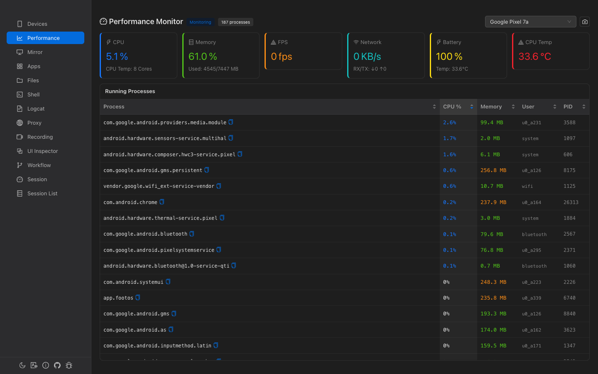

Performance Monitor
Real-time system and per-app performance monitoring. Track CPU, memory, FPS, network I/O, battery, and temperature with process-level memory breakdown.

Overview
6 Metric Cards
CPU usage, memory, FPS, network I/O, battery level, and CPU temperature at a glance.
Auto-Monitoring
Monitoring starts automatically when a device is selected. No manual start needed.
Process List
All running app processes with CPU usage, memory, user, and PID.
Process Detail
Click any process for detailed memory breakdown chart and heap analysis.
System Metrics
Six metric cards displayed in a row at the top of the page:
| Metric | Value | Sub-info | Alert Threshold |
|---|---|---|---|
| CPU | System-wide usage % | Core count | Red when > 80% |
| Memory | System memory usage % | Used/Total MB | Red when > 85% |
| FPS | Current frame rate | — | — |
| Network | Combined RX+TX KB/s | ↓RX ↑TX breakdown | — |
| Battery | Battery level % | Temperature °C | — |
| CPU Temp | Temperature °C | — | Red when > 70°C |
Performance Snapshot
Click the camera icon in the header to take a one-time performance snapshot. This collects CPU, memory, network, and battery data in parallel without requiring continuous monitoring.
Running Processes
A scrollable table showing all running app-level processes (system processes like init and surfaceflinger are excluded).
| Column | Default Sort | Description |
|---|---|---|
| Process | — | Package name (monospace, copyable) |
| CPU % | Descending ✓ | Color-coded: red ≥50%, orange ≥20%, blue >0% |
| Memory | — | RSS in MB. Color-coded: red ≥500MB, orange ≥200MB, green >0 |
| User | — | Linux user (e.g., u0_a123) |
| PID | — | Process ID |
Process Detail (Expandable)
Click any process row to expand an inline detail panel. Data is fetched via dumpsys meminfo and /proc/<pid>/status (takes 2-3 seconds).
Memory Breakdown Chart
Horizontal bar chart showing PSS (Proportional Set Size) by category:
- Graphics — GPU memory
- Code — DEX, OAT, shared libraries
- Native Heap — C/C++ allocations
- Java Heap — Dalvik/ART heap
- Stack — Thread stacks
- System, Private Other, Unknown
Process Info
| Field | Description |
|---|---|
| Threads | Thread count |
| FDs | File descriptor count |
| Activities | Android Activity count |
| Views | Android View count |
| WebViews | WebView instance count |
| Binders | Local + proxy binder count |
| Swap | Swap usage in MB |
| OOM | OOM score with classification: Foreground Visible Perceptible Previous Cached |
Heap Usage Bars
Progress bars showing allocated/total for Java Heap and Native Heap (e.g., "Java Heap: 21.0 / 32.5 MB").
How Data Is Collected
| Metric | Source |
|---|---|
| CPU | dumpsys cpuinfo |
| Memory | /proc/meminfo |
| FPS | dumpsys gfxinfo (frame count delta) |
| Network | /proc/net/dev (wlan/eth/rmnet interfaces) |
| Battery | dumpsys battery |
| Process list | dumpsys cpuinfo + ps -A (merged) |
| Process detail | dumpsys meminfo <pid> + /proc/<pid>/status |
Default sampling interval is 2 seconds. Up to 300 samples (approximately 10 minutes) are kept in memory.